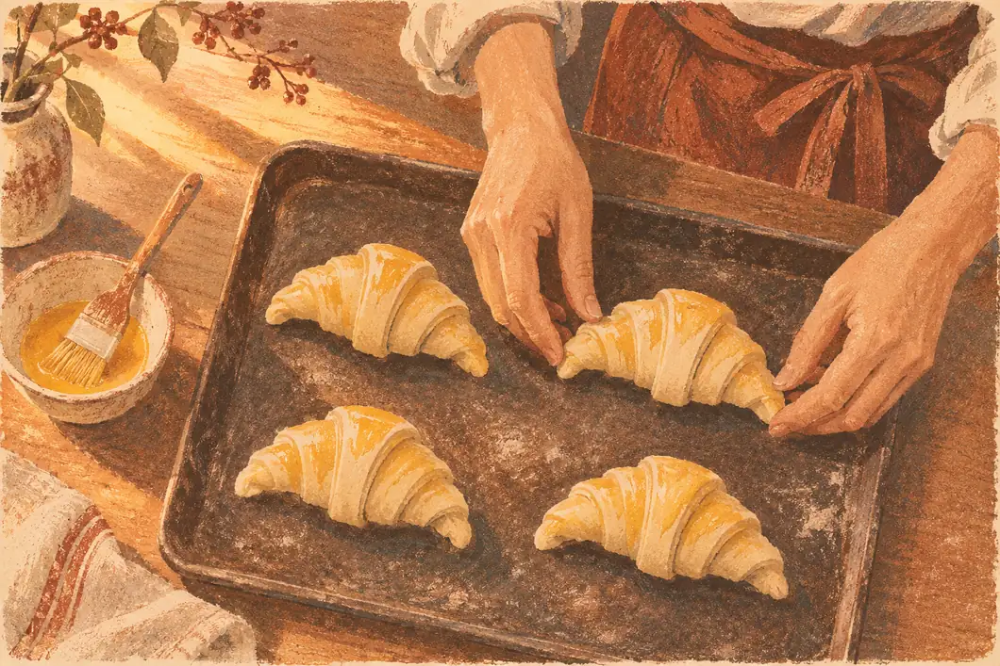
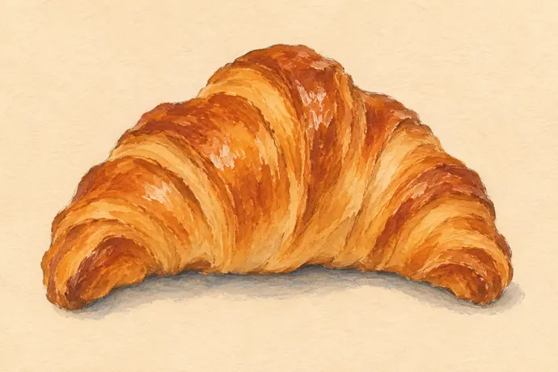
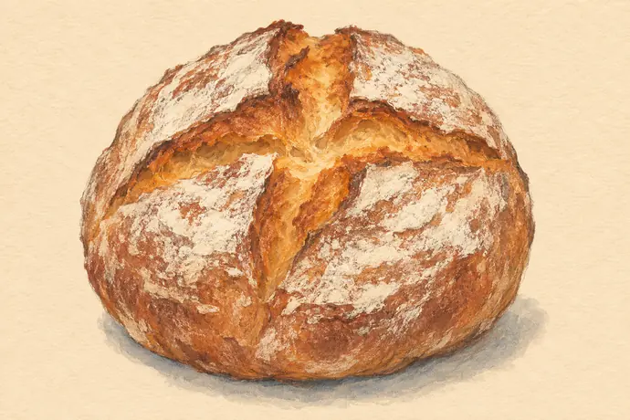

08:00
クロワッサン
開店に合わせて。コーヒーのおともに。
パンを見る ↗
発酵のすすみ具合で、
少しお待たせすることも。
朝・昼・おやつで選べる、
あさまどの定番。

外はさくっと、中はしっとり。発酵バターの香りを楽しむ一品。

香ばしい皮ともっちりした中身。厚めに切って、スープと一緒に。
底のカリッとした部分までおいしい。軽く温めるとバターが香る。
表示価格は税込です。
東中野本店
水〜日 8:00〜17:00
月・火 定休
水〜日 8:00〜17:00、月・火定休。
| 月 | 火 | 水 | 木 | 金 | 土 | 日 |
|---|
「休」の印は定休日。売り切れ次第終了。
小さなお知らせと、パンをおいしく食べる話。
はじまりは東中野。
それぞれの街にも、小さな窓を。

朝8:00〜17:00 ／ 月・火休み
朝9:00〜17:00 ／ 月・火休み
朝9:00〜17:00 ／ 月・火休み
朝9:00〜17:00 ／ 月・火休み